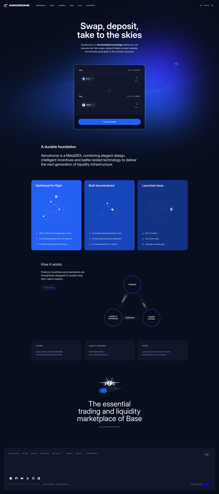

AI Website Generator
In the fast-paced world of decentralized finance (DeFi), innovative platforms are continuously emerging to address the complexities of trading, liquidity provision, and user engagement. One such platform is Aerodrome Finance, a decentralized exchange (DEX) and liquidity protocol that aims to optimize the trading experience while providing robust solutions for liquidity providers. With a focus on efficiency, transparency, and community governance, Aerodrome Finance is set to reshape the DeFi landscape. This blog will delve into the features, functionalities, and potential implications of Aerodrome Finance in the broader context of decentralized finance.
Aerodrome Finance is a decentralized exchange built on the Ethereum blockchain, designed to facilitate efficient trading and liquidity provisioning. By leveraging automated market maker (AMM) technology, Aerodrome allows users to trade cryptocurrencies directly from their wallets without relying on centralized intermediaries. The platform aims to create a seamless trading experience while providing users with the tools necessary to manage their assets effectively.
The Vision Behind Aerodrome Finance
The vision of Aerodrome Finance is to create a user-centric financial ecosystem that democratizes access to liquidity and trading opportunities. Recognizing the barriers that traditional financial systems impose, Aerodrome Finance seeks to empower users to take control of their finances through decentralized solutions. By prioritizing security, user experience, and community participation, Aerodrome Finance aims to foster a more inclusive and transparent financial environment.
1. Automated Market Maker (AMM)
At the heart of Aerodrome Finance is its automated market maker model. This system allows users to trade assets directly from their wallets while utilizing smart contracts to determine prices based on supply and demand within liquidity pools. The AMM model enhances trading efficiency and reduces risks associated with traditional order book systems, making it easier for users to execute trades.
2. Liquidity Pools
Aerodrome Finance provides users with the opportunity to create and participate in liquidity pools. By contributing assets to these pools, liquidity providers can earn rewards in the form of trading fees and token incentives. This functionality empowers users to maximize the utility of their assets and contribute to the overall liquidity of the platform.
3. Low Transaction Fees
One of the standout features of Aerodrome Finance is its low transaction fees. Operating on the Ethereum network, the platform employs strategies to minimize gas costs, making it an attractive option for both traders and liquidity providers. This affordability enhances the overall trading experience, particularly during periods of high network congestion.
4. User-Friendly Interface
Aerodrome Finance emphasizes user experience with a clean and intuitive interface. The platform is designed to be accessible for users of all experience levels, from beginners to seasoned traders. The straightforward navigation and clear information display ensure that users can easily engage with the platform’s features.
5. Cross-Chain Compatibility
Understanding the importance of interoperability in the DeFi ecosystem, Aerodrome Finance aims to support cross-chain functionality. This feature allows users to interact with assets from multiple blockchain networks, expanding the range of available options and enhancing flexibility for liquidity providers and traders.
6. Governance Token
Aerodrome Finance has its native governance token, AERO, which plays a crucial role within the ecosystem. Users can earn AERO tokens through liquidity provision and participation in various platform activities. These tokens can be used for governance, staking, and earning rewards, creating a vibrant and engaged community around the project.
7. Community Governance
Community involvement is a cornerstone of Aerodrome Finance’s philosophy. The platform incorporates governance mechanisms that allow users to participate in decision-making processes. Token holders can propose and vote on changes to the protocol, ensuring that the community has a voice in shaping the platform’s future.
1. Liquidity Fragmentation
Liquidity fragmentation is a significant challenge in the DeFi space, where liquidity is spread across multiple platforms. Aerodrome Finance aims to address this issue by providing a unified platform for liquidity provision and trading. By creating optimized liquidity pools, the protocol enhances overall liquidity and trading efficiency.
2. High Transaction Costs
Many DeFi platforms suffer from high transaction costs, particularly during periods of network congestion. Aerodrome Finance mitigates this issue by employing strategies to reduce gas fees, making it a cost-effective solution for users looking to trade and provide liquidity.
3. Complexity of User Interfaces
The steep learning curve associated with many DeFi platforms can discourage new users from participating. Aerodrome Finance addresses this challenge with a user-friendly interface that simplifies navigation and enhances the overall user experience. The platform is designed to be intuitive, making it accessible to users with varying levels of experience.
4. Limited Access to Cross-Chain Assets
As the blockchain ecosystem grows, the need for interoperability becomes increasingly important. Aerodrome Finance aims to support cross-chain transactions, allowing users to interact with a broader range of assets and services. This flexibility enhances user experience and expands trading opportunities.
1. User Registration and Wallet Integration
To get started with Aerodrome Finance, users can easily register on the platform and integrate their cryptocurrency wallets. This process enables users to retain full control over their assets while accessing the platform’s features and functionalities.
2. Creating and Participating in Liquidity Pools
Once registered, users can create or join liquidity pools. By depositing assets into these pools, users contribute to the overall liquidity of the platform and earn rewards through trading fees. Aerodrome Finance provides clear information about available pools, enabling users to make informed decisions.
3. Trading on the AMM
Users can trade cryptocurrencies directly from their wallets using the AMM functionality. The platform automatically adjusts prices based on the supply and demand within the liquidity pools, ensuring efficient trade execution. Users can easily select trading pairs and execute trades with minimal slippage.
4. Earning Rewards
By participating in liquidity pools and trading on the platform, users can earn AERO tokens and other incentives. These rewards can be staked for additional returns or used for governance purposes, allowing users to actively participate in the platform’s development.
5. Cross-Chain Transactions
Aerodrome Finance’s commitment to cross-chain compatibility allows users to interact with assets from multiple blockchain networks. This feature enhances user flexibility and expands the range of trading opportunities available on the platform.
1. Enhanced Liquidity
Aerodrome Finance’s liquidity pools provide users with the opportunity to contribute to a unified liquidity source, enhancing overall trading efficiency. This aggregation of liquidity benefits both traders and liquidity providers.
2. Low Transaction Fees
Operating on Ethereum with optimized strategies, Aerodrome Finance offers low transaction fees, making it an attractive option for users looking to minimize costs associated with trading and liquidity provision.
3. User-Friendly Experience
Aerodrome Finance’s intuitive interface simplifies the trading process, ensuring that users of all experience levels can navigate the platform with ease. This focus on user experience encourages greater participation in the DeFi space.
4. Diverse Financial Opportunities
With support for multiple trading pairs and liquidity pools, Aerodrome Finance allows users to explore a variety of financial opportunities. This diversity increases the likelihood of finding profitable trades and enhances the overall trading experience.
5. Community Engagement
Through its governance model, Aerodrome Finance empowers users to participate in decision-making processes. This democratic approach fosters a strong sense of community and collaboration, ensuring that users have a voice in the platform’s future.
1. Expanding Features and Services
As the DeFi landscape continues to evolve, Aerodrome Finance is likely to expand its offerings to include new features and services. This may involve introducing additional financial products, enhancing existing functionalities, and exploring partnerships with other projects.
2. Continued Focus on User Experience
Aerodrome Finance will likely continue prioritizing user experience by refining its interface and enhancing the overall platform. User feedback and community input will play a crucial role in shaping future developments.
3. Enhancing Cross-Chain Functionality
To further support interoperability, Aerodrome Finance may explore ways to enhance its cross-chain capabilities. This could involve integrating with additional blockchain networks and expanding the range of supported assets.
4. Building Strategic Partnerships
Aerodrome Finance may pursue partnerships with other projects, exchanges, and liquidity providers in the DeFi ecosystem. Collaborations can improve liquidity, expand service offerings, and provide users with more options.
5. Community and Ecosystem Growth
As Aerodrome Finance continues to grow, it will likely focus on building its community and ecosystem. This could involve hosting events, educational initiatives, and marketing campaigns to attract new users and engage existing ones.
1. Market Volatility
The DeFi space is characterized by significant market volatility, which can impact trading strategies and investment outcomes. Users should be aware of the risks associated with trading in a fluctuating environment.
2. Regulatory Landscape
As DeFi matures, it may face increasing regulatory scrutiny. Aerodrome Finance must navigate potential regulatory challenges to ensure compliance and maintain user trust.
3. Competition in the DeFi Space
The DeFi market is highly competitive, with numerous platforms offering similar services. Aerodrome Finance must continually innovate and differentiate itself to attract and retain users.
4. Security Risks
Despite prioritizing security, the DeFi space is not immune to vulnerabilities. Aerodrome Finance must remain vigilant in its security practices to protect user data and assets from potential threats.
Aerodrome Finance represents a significant advancement in the decentralized finance landscape, offering a comprehensive platform that empowers users with a range of liquidity solutions and trading opportunities. By prioritizing accessibility, security, and community engagement, Aerodrome Finance aims to create a more inclusive financial ecosystem that caters to the needs of individuals and businesses alike.
As the platform continues to evolve and expand its offerings, it has the potential to become a leading player in the DeFi space. By democratizing access to liquidity and fostering a sense of community, Aerodrome Finance embodies the principles of decentralization and innovation that define the future of finance.
For individuals seeking to navigate the complexities of decentralized finance, Aerodrome Finance offers a promising avenue to explore. With its commitment to user experience, education, and community involvement, the platform is well-positioned to thrive in the dynamic world of DeFi. Whether you are a novice trader or a seasoned investor, Aerodrome Finance provides the tools and resources needed to succeed in the ever-changing landscape of decentralized finance.
AI Website Generator